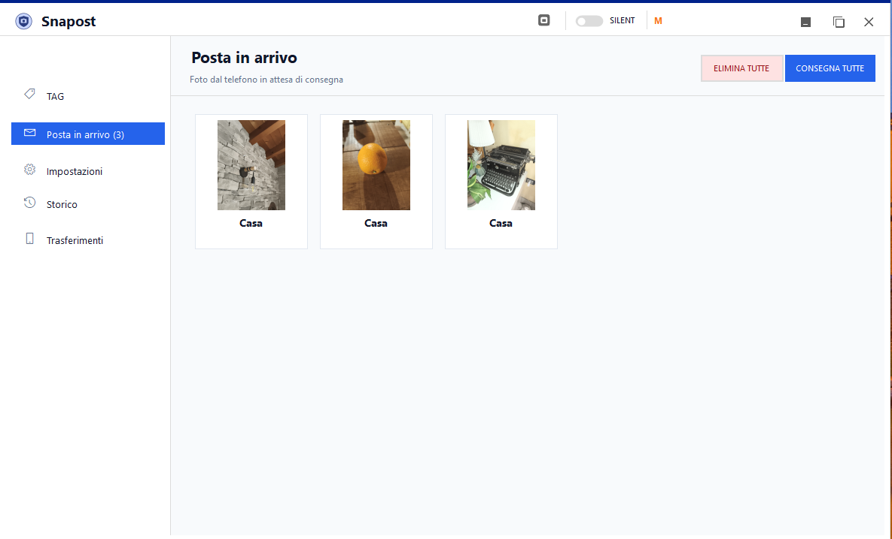
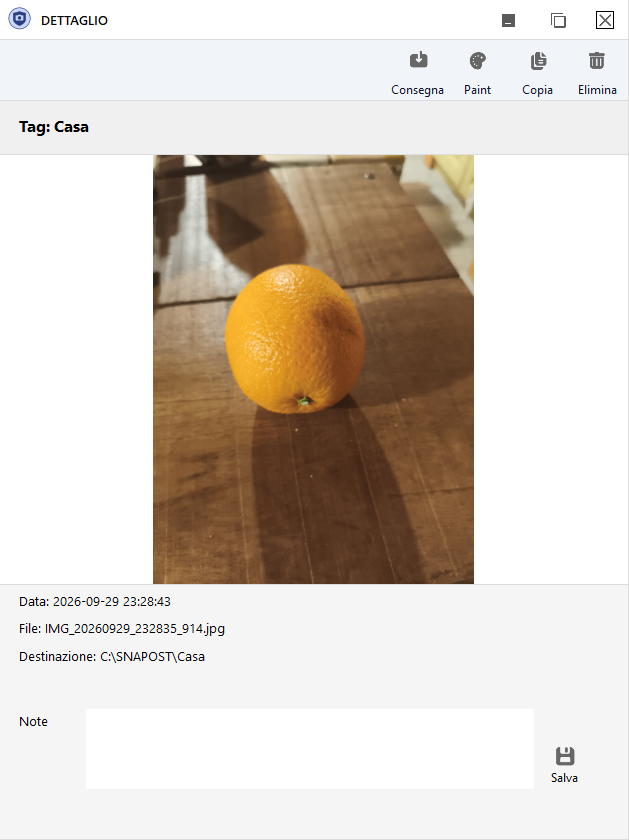
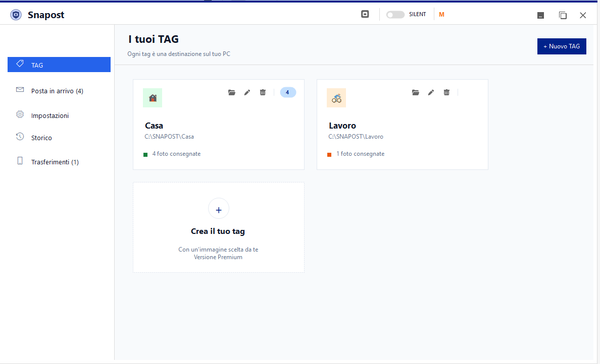
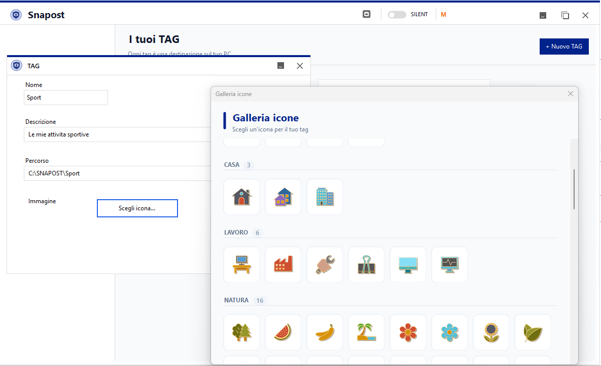
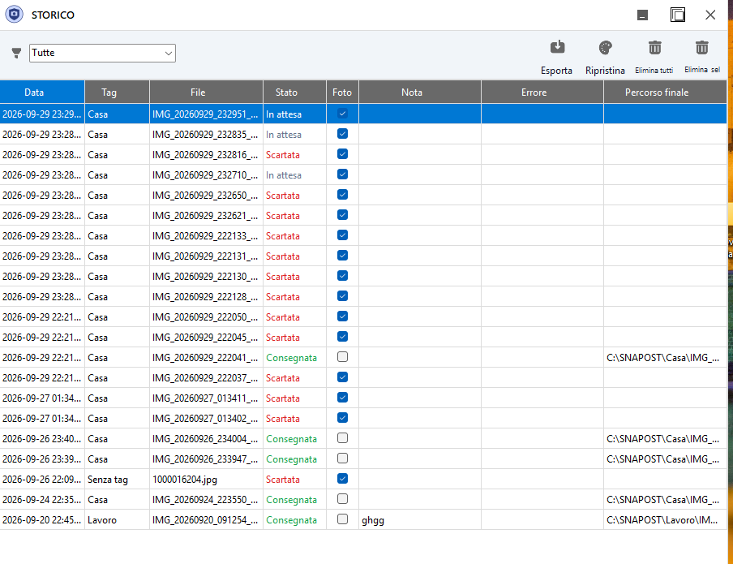
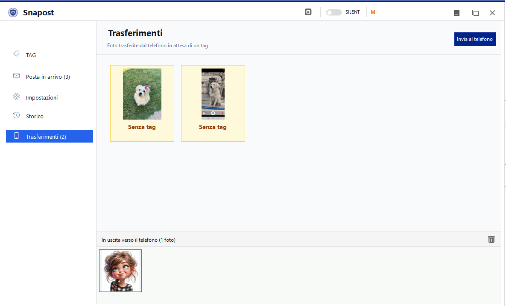
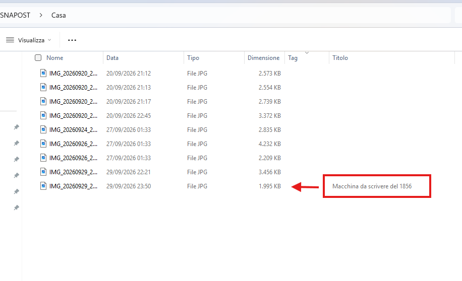

Posta in arrivo
Foto e documenti inviati dal telefono arrivano qui, pronti per la consegna nella cartella associata al tag.
Le foto arrivano dal telefono già taggate e l'app le consegna nelle cartelle che hai associato: niente download manuali, niente file da spostare.
Posta in arrivo, storico, dettaglio con anteprima e note: tutto il flusso sotto controllo, anche in direzione inversa.

Ogni foto passa da una posta in arrivo dove decidi cosa fare: consegnare nella cartella del tag, scartare o ripensarci.
Foto e documenti inviati dal telefono arrivano qui, pronti per la consegna nella cartella associata al tag.
Dettaglio a tutto schermo con destinazione ed errori visibili: verifica la foto prima di consegnarla.
Aggiungi un commento dal telefono o dal PC: la nota viaggia con la foto e la ritrovi sempre nel dettaglio.
Tutte le foto consegnate o scartate, con filtri, azioni di massa e ripristino di quelle scartate.
Seleziona una o più foto sul PC e spediscile al telefono: arrivano nella galleria, senza cavi.
Le foto in attesa di invio al telefono sono sempre visibili: controlli, svuotamento e stato a colpo d'occhio.
Avvio automatico con Windows e modalità silenziosa nella barra: le foto arrivano anche se non ci pensi.
Scegli nome, descrizione, cartella di destinazione e un'icona dalla galleria: organizzi le foto secondo il tuo flusso.
Apri uno screenshot per vederlo ingrandito.






Tutte le funzioni dell'app Windows in due minuti.
Installer per Windows. Ricorda: per il flusso completo serve anche l'app per Android.
Se Windows mostra l'avviso SmartScreen (il file non è ancora firmato digitalmente): clicca Informazioni e poi Esegui comunque.